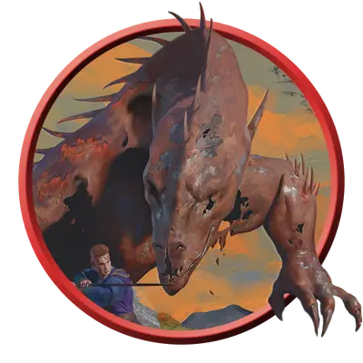

Оржавевший вирм
Rusted Wyrm
Громадный Конструкт, Нейтральный

Класс Защиты 20 Инициатива +6 (16)
Хиты 231 (14к20 + 84)
Скорость 40 футов, Плавания 60 футов
| мод | спас | ||
|---|---|---|---|
| СИЛ | 25 | +7 | +7 |
| ЛОВ | 13 | +1 | +1 |
| ТЕЛ | 22 | +6 | +6 |
| мод | спас | ||
|---|---|---|---|
| ИНТ | 8 | −1 | −1 |
| МДР | 14 | +2 | +2 |
| ХАР | 6 | −2 | −2 |
Иммунитеты Огонь, Яд; Испуганный, Истощение, Окаменевший, Отравленный
Чувства Тёмное зрение 120 футов, пассивное Восприятие 12
Языки Общий, Драконий
Опасность 14 (11 500 опыта; БВ +5)
Особенности
Легендарное сопротивление (3/день). Если вирм проваливает спасбросок, он вместо этого может преуспеть в нём.
Действия
Мультиатака. Вирм совершает две атаки Укусом.
Укус. Бросок рукопашной атаки: +12, досягаемость 20 фт. Попадание: 29 (4к10 + 7) Колющего урона.
Паровое дыхание (Перезарядка 5–6). Спасбросок Ловкости: Сл 19, каждое существо и каждый воспламеняемый объект, который никто не носит и не несёт, в 60-футовом Конусе. Провал: 45 (7к12) урона Огнём, и цель начинает гореть. Успех: Только половина урона. Провал или успех: Нахождение под водой не даёт Сопротивления урону Огнём от Парового дыхания.
Бонусные действия
Ржавая короста. Спасбросок Телосложения: Сл 19, одно существо в пределах 20 футов от вирма. Провал: 14 (4к6) урона Ядом, и цель Отравлена до конца своего следующего хода. Пока цель Отравлена, она также Парализована.
Бонус мастерства +5
Среда обитания Леса, Прибрежье
Сокровища Личные
Оржавевшие
Конструкты — жертвы сверхъестественного проклятия
Сверхъестественное проклятие Ржавления, охватившее острова Муншэй, проявляется в виде тонкой коркой железа на коже живых существ. Грубое железо легко ржавеет, и кожа приобретает болезненный оранжево-серый оттенок. Если проклятие не остановить, жертва превращается в оржавевшего — живую железную пародию на саму себя, с которой хлопьями осыпается ядовитая ржавчина.
По мере того как затвердевает кожа, опустошается и разум. Оржавевшие ненавидят нетронутую природу и при любой возможности стремятся её уничтожить.
Оржавевший вирм — драконий колосс, способный на чудовищное опустошение. Одни ржавые вирмы испаряют реки и губят источники, другие забираются глубоко под воду, круша коралловые рифы и вскипая море.
Другие оржавевшие
Вы можете превратить любого Великана, Гуманоида, Зверя, Фею или Чудовище в оржавевшего следующим образом: поменяйте тип существа на Конструкт и добавьте ему иммунитет к урону Ядом, а также состояниям Истощение, Окаменевший и Отравленный.